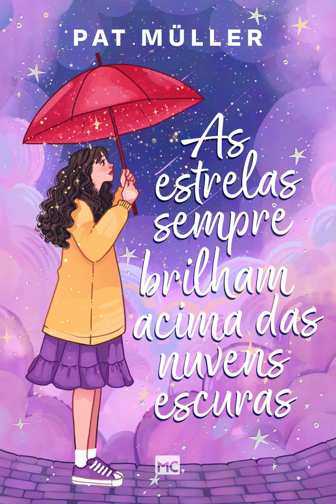

As estrelas sempre brilham acima das nuvens escuras.
O livro foi escrito por Pat Müller

Sinopse Oficial:
Prestes a se formar no ensino médio, Vicky já tem todo o futuro (infalivelmente) planejado. Não há espaço para imprevistos, relacionamentos ou até mesmo para a culpa que carrega pela morte do avô. Mas um presente aparentemente comum lhe abre uma oportunidade com a qual ela jamais poderia ter sonhado: transportar-se para o futuro! Em meio ao luto, crises familiares e o forte desejo de iniciar a vida acadêmica e ter uma carreira de sucesso, Vicky passa a conhecer-se melhor enquanto viaja no tempo. Nessa jornada de autodescoberta ela busca maneiras de superar a perda do avô, restaurar sua fé, reconectar-se com amizades verdadeiras e valorizar os vínculos familiares.
Curiosidades:
Vicky consegue viajar para o futuro por meio de um guarda-chuva vermelho. Essa experiência faz com que ela reflita sobre suas escolhas, sua família, suas amizades e sua fé. O título representa a ideia de esperança: mesmo durante momentos difíceis, sempre existe uma luz e a possibilidade de dias melhores.
Informações:
- Editora: Mundo Cristão
- Ano de publicação: 2024
- Gênero: Ficção cristã / Literatura (infanto-juvenil)
- Páginas: 168